10个跑完拉伸动作塑造完美腿部线条
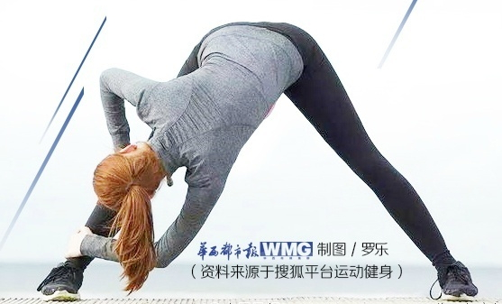-
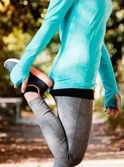
1.简易版舞者式/大腿部位肌肉伸展
动作要领
单脚站稳，将另一只脚往后勾起。
同测手轻扶脚踝处，缓慢将小腿加进大腿，轻触臀部。大约10秒后换脚伸展。 -
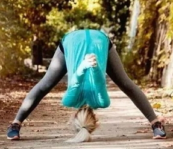
2.双脚宽距上身前倾/伸展腿筋极佳动作
动作要领
两脚间距打开，两脚掌平行并朝向前方。
将双手紧握并向后延伸，同时吸气。此时脊椎是直立的。
突起，同时上身往前倾弯曲。双手自然地伸展超过头部。伸展大约10秒。 -
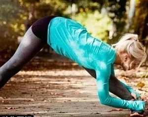
3.双脚宽距侧边伸展/伸展腿筋
动作要领
两向侧边单脚伸展，大约10秒后换脚。 -
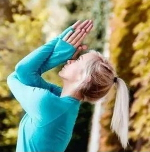
4.肩膀伸展/慢跑不仅是下半身的动作，上半身的肌群也会参与
动作要领
交叉双手，让右手肘至于左手肘之上。
抬起手肘至肩膀高度，并保持双手在正中央。
大约10秒后换边交叉。 -
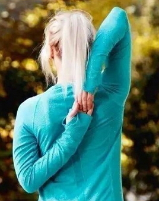
5.牛面式/针对肩膀伸展的动作
动作要领
配合呼吸，从头部旁边将右手往后弯曲。
左手从下方往后弯曲
大约10秒后换手，上方手肘尽可能不靠近耳朵，脊椎是直立的。 -
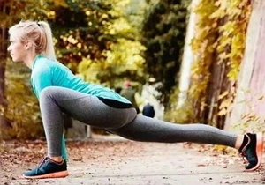
6.低弓箭步/大腿、臀部肌群的伸展
动作要领：
单脚往前跨步，尽可能的延伸距离。
双手轻触地面稳定身体，且在前脚的内侧。
蹲低臀部，越低越能伸展臀部肌肉。
大约10秒后，换脚伸展。 -
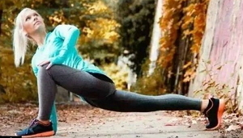
7.低弓步旋转/臀部肌肉
动作要领：
将上半身同侧旋转，手可扶膝或往外打开。
进阶版动作：后脚膝盖跪地举起，单手抓住后脚，增加难度。
大约10秒后换边伸展。 -
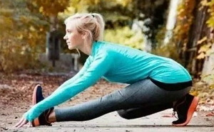
8.半分腿/主要目标为小腿腿筋
动作要领：
蹲下呈起跑准备动作，屁股向后坐于腿上，同时伸展前脚。
吸气时伸展背部、脊椎。吐气时背部平直向前倾，贴近前脚。
背部要呈平直，每次下压时都更贴近前脚一点。大约10秒换脚。 -
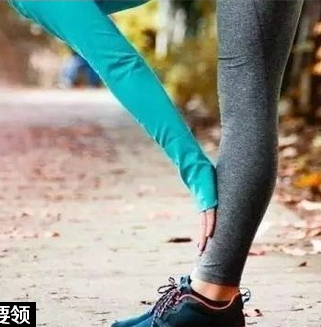
9.半前屈伸展式/伸展大腿、臀部到腰部
动作要领：
自然站立背部挺直，身体前倾。
腿部尽量打直伸展。
避免太剧烈伸展肌肉，只要维持背部平直，缓慢的伸展腿部。 -
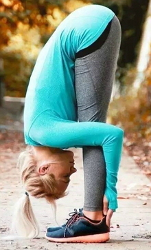
10.全前倾/做完这个动作你的全身都会有种不同的感觉
动作要领：
折叠身体，将上半身贴近下半身。大约10秒。